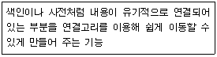
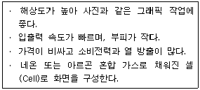
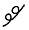
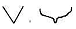
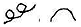
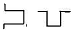
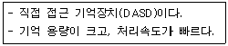

워드프로세서-2급(폐지) (2011-06-19 기출문제)
1과목: 워드프로세서 용어 및 기능
1. 다음 중 문서에서 영문을 입력할 때 줄의 마지막에서 단어가 끝나지 않고 다음 줄의 처음으로 연결되는 경우 자동으로 이 단어를 다음 줄의 처음으로 옮겨주는 기능을 무엇이라고 하는가?
- 래그드
- 정렬
- 워드 랩
- 강제개행
(정답률: 82%)

2. 다음 중 탭(Tab) 기능에 대한 설명으로 옳지 않은 것은?
- 커서를 일정한 간격으로 신속하게 이동하는 기능을 말한다.
- 커서의 이동은 기본 8칸으로 지정되어 있으나 조정 할 수 있다.
- 사용자가 탭을 임의로 변경, 추가, 삭제 할 수 있다.
- 소수점일 경우 가운데 탭을 사용하면 정수와 소수를 구분하여 정렬할 수 있다.
(정답률: 62%)
3. 다음 중 워드프로세서 편집시 문자를 삭제하기 위하여 사용할 수 있는 키로 적당하지 않은 것은?
- [Spacebar]
- [Delete]
- [Backspace]
- [Esc]
(정답률: 76%)
4. 다음 중 워드프로세서의 편집 기능과 관련이 없는 것은?
- 영문균등(Justification)
- 미주(Endnote)
- 가운데 정렬(Centering)
- 하드 카피(Hard Copy)
(정답률: 79%)
5. 다음 중 사무문서의 유통 경로와 운반 거리를 단축하고, 처리 시간이나 기일을 정하는 것과 관계있는 사무관리의 원칙은?
- 용이성
- 경제성
- 정확성
- 신속성
(정답률: 83%)
6. 다음 중 "Cut(오려두기) → Paste(붙이기)" 기능과 가장 관련이 깊은 기억장치는?
- CD-ROM
- 하드디스크(Hard Disk)
- 버퍼(Buffer)
- 플로피디스크(Floppy Disk)
(정답률: 81%)
7. 다음 중에서 토글 키에 대한 설명으로 옳지 않은 것은?
- [Caps Lock], [Scroll Lock] 등의 키가 해당된다.
- 다른 키와 함께 사용함으로써 특정기능을 수행한다.
- 하나의 키가 두 가지의 기능을 수행한다.
- [Insert]키는 입력모드에서 삽입 또는 수정으로 전환할 수 있다.
(정답률: 64%)
8. 다음 중 문서의 검토 및 협조에 대한 설명으로 옳지 않은 것은?
- 기안문은 결재권자의 결재를 받기 전에 보조기관 또는 보좌기관의 검토를 받아야 한다.
- 문서의 내용이 행정기관내의 다른 보조기관 또는 보좌기관이나 다른 행정기관의 업무와 관련이 있을 때에는 그 기관의 협조를 받아야 한다.
- 행정기관의 장은 결재권자의 결재에 이르기까지 검토자의 수가 3인을 넘지 아니하도록 노력하여야 한다.
- 기안문을 검토 또는 협조함에 있어서 그 내용과 다른 의견이 있을 때에는 당해문서 또는 별지에 그 의견을 표시하여야 한다.
(정답률: 76%)
9. 다음 설명과 가장 관계가 깊은 것은?

- 자동 저장
- 메일 머지
- 보일러 플레이트
- 하이퍼텍스트
(정답률: 79%)
10. 다음 중 행정기관 내 문서의 수발 및 사무 처리를 주관하는 부서는 어디인가?
- 문서과
- 총무과
- 서무과
- 처리과
(정답률: 74%)
11. 다음 워드프로세서 용어의 설명이 옳지 않은 것은?
- 스크롤(Scroll) : 문서의 실제 크기는 변경하지 않고 화면에 보이는 크기만 확대하거나 축소시키는 기능이다.
- 레이아웃(Layout) : 문서작성에서 본문, 그림, 표등을 페이지의 적당한 위치에 균형 있게 배치하는 기능이다.
- 위지윅(WYSIWYG) : 화면에 표현된 그대로 출력 결과를 얻을 수 있다는 것을 의미한다.
- 해상도(Resolution) : '가로 픽셀 수 x 세로 픽셀 수'로 표시하며, 화면의 선명도를 결정한다.
(정답률: 64%)
12. 다음 중 글꼴의 표현방식에 대하여 설명한 것으로 옳지 않은 것은?
- 비트맵 방식은 점으로 글꼴을 표현하는 방식이다.
- 아웃라인 방식은 X/Y 좌표값을 선으로 조합하여 글꼴을 만드는 방식이다.
- 명조체나 고딕체는 비트맵 방식으로 형성된 글꼴이다.
- 아웃라인 방식은 확대하면 텍스트의 선명도가 떨어진다.
(정답률: 63%)
13. 다음 중 한글코드에 관한 설명으로 옳지 않은 것은?
- 유니코드는 완성형 코드에 조합형 코드를 반영하여 개발하였다.
- 조합형 한글 코드는 국제 표준 코드로 사용한다.
- 완성형 한글 코드는 정보 교환시 데이터의 충돌이 없어 정보교환용으로 사용한다.
- 조합형 한글 코드는 코드값을 조합한 것으로 현대 한글 11,172자를 표현할 수 있다.
(정답률: 62%)
14. 다음 중 낱장 인쇄용지의 크기가 가장 큰 것은?
- B4
- A5
- B5
- A4
(정답률: 84%)
15. 다음 중 인쇄 장치의 선명도를 나타내는 단위는?
- CPS(Character Per Second)
- LPM(Line Per Minute)
- DPI(Dot Per Inch)
- PPM(Page Per Minute)
(정답률: 73%)
16. 다음 중 저장(Save) 기능에 대한 설명으로 옳은 것은?
- 주기억장치의 내용을 보조기억장치에 저장하는 기능
- 연산장치의 결과를 주기억장치에 저장하는 기능
- 보조기억장치의 내용을 주기억장치에 저장하는 기능
- 주기억장치의 내용을 연산장치에 보내는 기능
(정답률: 69%)
17. 다음 중 문서 내에서 문단 모양, 글자 모양 등을 일관되게 작성하기 위해서 사용하는 기능은?
- 색인(Index)
- 스타일(Style)
- 포매터(Formatter)
- 상용구(Glossary)
(정답률: 84%)
18. 다음은 워드프로세서의 표시장치 중 무엇에 대한 설명인가?

- 음극선관(CRT) 모니터
- 액정 표시장치(LCD)
- 플라즈마 표시장치(PDP)
- 전계 방출형 표시장치(FED)
(정답률: 75%)
19. 다음 교정부호 중 위로 올라간 글자를 아래로 끌어내리는 기능의 부호는?

(정답률: 86%)
20. 다음 중 서로 상반되는 의미를 나타내는 교정부호끼리 짝지어진 것은?



(정답률: 83%)
2과목: PC 운영 체제
21. 다음 중 한글 Windows XP에서 [작업 표시줄]에 관한 설명으로 옳지 않은 것은?
- 실행중인 프로그램들이 단추 형식으로 표시된다.
- 화면의 1/2 범위 내에서 크기 변경이 가능하다.
- 알림 영역을 표시하거나 보이지 않게 설정할 수 있다.
- 마우스 끌어놓기로 위치 변경이 가능하다.
(정답률: 51%)
22. 다음 중 한글 Windows XP에서 현재 사용 중인 활성창의 화면만을 클립보드로 복사할 때 사용하는 바로가기 키로 옳은 것은?
- [Alt]+[Print Screen]
- [Ctrl]+[Esc]
- [Ctrl]+[C]
- [Print Screen]
(정답률: 72%)
23. 다음 중 한글 Windows XP의 [검색 결과] 창에서 [검색 도우미] 탐색창을 이용하여 할 수 있는 작업으로 옳지 않은 것은?
- 파일 또는 폴더를 찾을 수 있다.
- 네트워크와 연결된 컴퓨터를 찾을 수 있다.
- 완전히 삭제된 파일 또는 폴더를 찾을 수 있다.
- 주소록에 저장된 사람을 찾을 수 있다.
(정답률: 80%)
24. 다음 중 한글 Windows XP의 화면 해상도에 관한 설명으로 옳지 않은 것은?
- 그래픽 어댑터의 종류에 따라 지원되는 해상도가 다르다.
- 해상도를 표시하는 숫자가 클수록 해상도가 높아진다.
- [디스플레이 등록정보] 창에서 해상도를 설정할 수 있다.
- 새로 지정된 해상도를 적용하려면 컴퓨터를 다시 시작해야 한다.
(정답률: 72%)
25. 다음 중 한글 Windows XP에서 [Windows Media Player]의 기능에 관한 설명으로 옳지 않은 것은?
- WAV, MP3 등과 같은 오디오 파일의 재생과 편집을 할 수 있다.
- 인터넷을 통해 라디오 방송국의 방송 내용을 들을 수 있다.
- 컴퓨터나 미디어 라이브러리에 저장된 트랙으로 오디오 CD나 미디어 CD를 만들 수 있다.
- 스킨으로 [Windows Media Player] 창의 모양을 변경할 수 있다.
(정답률: 56%)
26. 다음 중 한글 Windows XP의 [장치 관리자] 창에서 수행 할 수 있는 작업으로 옳지 않은 것은?
- 응용 프로그램의 추가와 변경
- 장치 드라이버의 변경이나 제거
- 하드웨어 변경 사항의 검색
- 해당 하드웨어의 '사용 안 함' 설정
(정답률: 48%)
27. 다음 중 한글 Windows XP의 기능으로 옳지 않은 것은?
- 같은 컴퓨터를 여러 사용자가 사용할 수 있도록 사용자 계정을 설정할 수 있다.
- 방화벽을 이용하여 컴퓨터 바이러스를 사전에 차단하고 치료할 수 있다.
- 윈도우 설치 시 파일 시스템을 FAT, FAT32, NTFS 중 하나로 선택할 수 있다.
- 여러 개의 프로그램을 동시에 실행하여 작업할 수 있다.
(정답률: 52%)
28. 다음 중 한글 Windows XP에서 프린터의 스풀링에 관한 설명으로 옳지 않은 것은?
- 스풀링은 CPU의 효율을 높이기 위해 사용한다.
- 스풀링은 보조기억장치를 활용하여 이루어진다.
- 스풀링은 [시스템 등록 정보] 창에서 설정할 수 있다.
- 스풀링된 인쇄 작업을 취소할 수 있다.
(정답률: 48%)
29. 다음 중 한글 Windows XP에서 [도움말 및 지원 센터] 창의 기능에 관한 설명으로 옳지 않은 것은?
- [시작] 메뉴의 [도움말 및 지원] 메뉴를 선택하면 실행할 수 있다.
- 검색된 도움말의 내용은 인쇄가 가능하다.
- 불필요한 도움말은 삭제하여 [휴지통]에 버릴 수 있다.
- 검색된 도움말의 내용은 하이퍼텍스트 기능을 지원 한다.
(정답률: 76%)
30. 다음 중 한글 Windows XP의 [그림판] 프로그램의 사용에 관한 설명으로 옳지 않은 것은?
- 그림의 특정 영역을 선택하여 저장할 수 있다.
- 마우스 오른쪽 단추를 누르고 드래그하면 배경색으로 그림을 그릴 수 있다.
- 레이어 기능을 이용하여 그림 요소를 구성할 수 있다.
- 그림의 특정 영역을 사각형의 형태로 선택하여 복사할 수 있다.
(정답률: 59%)
31. 다음 중 한글 Windows XP의 네트워크 환경에서 프로토콜에 관한 설명으로 옳은 것은?
- 컴퓨터를 네트워크에 연결하는 어댑터의 일종이다.
- 서로 다른 컴퓨터 간에 통신을 위한 규약이다.
- 파일 또는 프린터를 공유하는 프로그램이다.
- 하이퍼터미널과 같은 통신 소프트웨어이다.
(정답률: 62%)
32. 다음 중 한글 Windows XP의 [Windows 탐색기] 창에서 [보기] 메뉴의 포함되지 않은 하위 메뉴 항목은?
- 도구 모음
- 즐겨 찾기
- 탐색 창
- 아이콘 정렬 순서
(정답률: 58%)
33. 다음 중 한글 Windows XP의 [보안 센터] 창에서 Windows 보안 설정에 관한 항목으로 옳지 않은 것은?
- 팝업 차단
- 방화벽
- 바이러스 백신
- 자동 업데이트
(정답률: 54%)
34. 다음 중 한글 Windows XP에서 응용 프로그램을 강제적으로 종료시키기 위하여 [Windows 작업 관리자] 창을 호출하기 위한 바로가기 키로 옳은 것은?
- [Ctrl]+[Alt]+[Delete]
- [Ctrl]+[F4]
- [Alt]+[Esc]
- [Shift]+[Delete]
(정답률: 79%)
35. 다음 중 한글 Windows XP의 폴더 창에서 바로 이전에 파일을 실수로 삭제하였을 때 삭제한 파일을 복구하기 위한 방법으로 옳지 않는 것은?
- [휴지통]에 있는 해당 파일의 바로가기 메뉴에서 [복원]을 선택한다.
- 폴더 창의 [편집] 메뉴에서 [삭제 취소]를 선택한다.
- 폴더 창의 바로가기 메뉴에서 [붙여넣기]를 선택한다.
- [Ctrl] + [Z]키를 누른다.
(정답률: 63%)
36. 다음 중 한글 Windows XP에서 [시작] 단추의 바로가기메뉴에 있는 항목으로 옳지 않은 것은?
- 열기
- 실행
- 탐색
- 검색
(정답률: 51%)
37. 다음 중 한글 Windows XP의 [마우스 등록 정보] 창에서 할 수 있는 작업 내용으로 옳지 않은 것은?
- 오른 쪽 단추와 왼쪽 단추의 기능 바꾸기
- 마우스 포인터 모양 바꾸기
- 마우스 드라이버의 업데이트
- 마우스 끌어놓기의 거리 설정
(정답률: 53%)
38. 다음 중 한글 Windows XP에서 시스템 도구인 [디스크 검사]에 관한 설명으로 옳지 않은 것은?
- 디스크 검사를 실행하려면 모든 파일을 닫아야 한다.
- 파일이나 폴더의 오류를 검사하고 오류를 복구한다.
- 디스크의 단편화를 발견하여 제거한다.
- 디스크 표면을 검사하여 불량 섹터를 검사한다.
(정답률: 53%)
39. 다음 중 한글 Windows XP의 네트워크 환경에서 공유에 대한 설명으로 옳은 것은?
- 프린터는 공유가 불가능하다.
- 네트워크 사용자가 내 파일을 변경할 수 있도록 폴더의 공유 설정이 가능하다.
- 공유할 기간에 대한 설정이 가능하다.
- 공유할 수 있는 사용자 수의 제한이 가능하다.
(정답률: 57%)
40. 다음 중 한글 Windows XP에서 실행 파일을 같은 디스크 드라이브 내에 다른 폴더로 복사하기 위해 마우스로 끌어 놓기 할 때 함께 사용하는 키로 옳은 것은?
- [Alt] 키
- [Ctrl] 키
- [Shift] 키
- [Tab] 키
(정답률: 69%)
3과목: PC 기본 상식
41. 다음 중 공개키 암호화 기법에 대한 설명으로 옳지 않은 것은?
- 이중키 암호화 기법이라고도 한다.
- 암호화키와 복호화키가 서로 다르다.
- 대표적인 알고리즘으로 RSA가 있다.
- 비밀키 암호화 기법에 비해 암호화와 복호화의 속도가 빠르다.
(정답률: 58%)
42. 컴퓨터는 취급하는 데이터의 형태에 따라 아날로그 컴퓨터와 디지털 컴퓨터로 분류할 수 있다. 다음 중 디지털 컴퓨터에 대한 설명으로 가장 옳지 않은 것은?
- 데이터를 각 자리마다 0 혹은 1의 비트로 표현된 이산적인 데이터를 처리한다.
- 데이터 처리를 위한 명령어들로 구성된 프로그램에 의해 동작된다.
- 온도, 무게 등과 같이 연속적으로 변화하는 데이터를 효율적으로 처리할 수 있다.
- 산술 및 논리 연산을 처리하는 회로에 기반을 둔 범용 컴퓨터로 이용된다.
(정답률: 61%)
43. 다음 중 최초의 범용 컴퓨터로 옳은 것은?
- IBM PC
- Apple Ⅰ
- Apple II
- 에니악(ENIAC)
(정답률: 78%)
44. 다음 중에서 파일 확장자의 성격이 나머지와 다른 것은?
- ZIP
- ARJ
- HWP
- RAR
(정답률: 64%)
45. 다음 중 비교적 가까운 거리에 위치한 소수의 장치들을 서로 연결한 네트워크로 일반적으로 하나의 사무실, 하나 또는 몇 개의 인접한 건물을 연결한 네트워크를 무엇이라 하는가?
- LAN
- VAN
- WAN
- ISDN
(정답률: 74%)
46. 보조기억장치는 주기억장치를 보조해주는 기억장치로 대량의 데이터를 저장할 수 있도록 해준다. 다음 중에서 보기와 같은 특징을 가진 보조기억장치는 무엇인가?

- 자기테이프
- zip 드라이브
- 플로피디스크
- 하드디스크
(정답률: 65%)
47. 다음 중 운영체제의 기능으로 볼 수 없는 것은?
- 시스템 자원을 관리한다.
- 프린터를 제어한다.
- 검색어를 입력하면 관련 사이트의 목록을 보여준다.
- 디스크에 파일을 저장한다.
(정답률: 50%)
48. 다음 중 애플사가 개발한 압축방식으로 JPEG를 기본으로 하는 것은 어느 것인가?
- DivX
- DVI
- Quick Time
- MPEG
(정답률: 56%)
49. 오디오, 비디오 등의 아날로그 신호를 펄스부호변조(PCM)를 사용하여 전송에 적합한 디지털 비트 스트림으로 압축 변환하고, 역으로 수신 측에서 디지털 신호를 아날로그 신호로 변환하는 기기 또는 장치를 무엇이라고 하는가?
- 라우터(Router)
- 램덱(RAMDAC)
- 스트림(Stream)
- 코덱(CODEC)
(정답률: 65%)
50. 다음 중 정보 사회의 특징으로 옳지 않은 것은?
- 사이버 공간 상의 새로운 인간관계와 문화가 형성 되었다.
- 정보 사회에서는 대중화 현상이 확산되어 누구나 다른 사람의 정보를 공유하고 사용할 수 있다.
- 정보 생산 및 처리 기술이 발달하여 사회 전반의 능률과 생산성이 증대 되었다.
- 정보 사회에서는 통신 기술의 발달로 시간과 공간의 제약에서 벗어나게 되었다.
(정답률: 60%)
51. 다음 중 통신 프로토콜의 기능과 거리가 먼 것은?
- 바이러스 감지(Virus Detection) 기능 수행
- 흐름제어(Flow Control) 기능 수행
- 동기화(Synchronization) 기능 수행
- 에러 검출(Error Detection) 기능 수행
(정답률: 54%)
52. 다음 중 데이터베이스 관리 시스템이 갖는 장점으로 옳지 않은 것은?
- 데이터 중복의 최소화
- 데이터의 일관성 유지
- 단순한 자료처리와 운영비 감소
- 데이터의 무결성 유지
(정답률: 59%)
53. 다음 중 컴퓨터 시스템의 출력장치로 옳지 않은 것은?
- 음극선관(CRT)
- 마우스(Mouse)
- 프린터(Printer)
- 액정표시장치(LCD)
(정답률: 73%)
54. 다음은 멀티미디어 데이터를 빠르게 처리하는데 도움이 되는 것들이다. 이 중에서 가장 관계가 적은 것은?
- 빠른 CPU
- 대용량 하드 디스크
- 대용량 ROM
- 고성능 그래픽 카드
(정답률: 55%)
55. 다음 중 메모리 처리 속도가 가장 빠른 것은 어느 것인가?
- DRAM
- EDORAM
- DRDRAM
- SDRAM
(정답률: 49%)
56. 다음 중 네트워크를 통해 연속으로 자신을 복제하여 시스템의 부하를 높이는 바이러스의 일종을 무엇이라 하는가?
- 웜(Worm)
- 해킹(Hacking)
- 스푸핑(Spoofing)
- 스파이웨어(Spyware)
(정답률: 63%)
57. CPU를 구성하고 있는 것이 아닌 것은?
- 제어장치
- 연산장치
- RAM
- 레지스터
(정답률: 60%)
58. 다음 중 보조기억장치에 대한 설명으로 옳지 않은 것은?
- RAM을 보조하기 위해 사용한다.
- 비휘발성의 특징을 가지고 있다.
- 반영구적으로 자료를 저장할 수 있다.
- 접근 속도가 느리므로 백업용으로 사용하기에는 적합하지 않다.
(정답률: 62%)
59. 다음 중 프로그램 패키지와 그 종류가 바르게 연결되지 않은 것은?
- 스프레드시트 - 엑셀, 로터스
- 데이터베이스 - 오라클, Access
- 프레젠테이션 - 파워포인트, AutoCAD
- 워드프로세서 - 한글, MS-Word
(정답률: 57%)
60. 다음 중 멀티미디어 저작도구에 해당하지 않는 것은?
- 오서웨어 프로페셔널(Authorware professional)
- 툴북(Tool book)
- 크롬(Crome)
- 디렉터(Director)
(정답률: 55%)